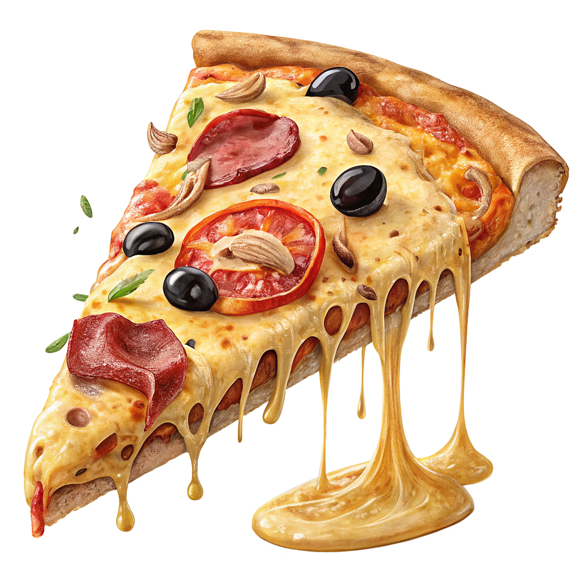
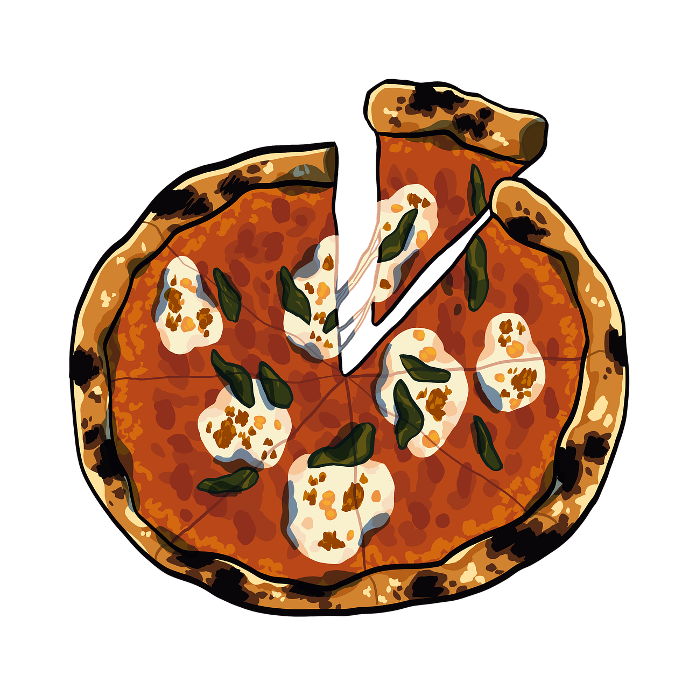

Using the right amount of flour, water, yeast, and oil helps the dough become soft and stretchy. Too much or too little can change how the crust feels and bakes.
Giving the dough time to rest allows the yeast to work its magic. This makes the crust light, airy, and full of tiny bubbles.
A hot regular oven helps the crust bake evenly and turn golden. The right temperature makes the outside crisp while keeping the inside soft.

We created this project to make learning how to cook both fun and meaningful for kids. Our goal is to turn simple kitchen activities into exciting learning experiences that build confidence and curiosity. By using interactive tools, clear steps, and playful visuals, children learn how ingredients work together to create real results. This project encourages hands-on learning, creativity, and problem-solving in a safe and friendly way. Because great cooking starts with understanding and a little bit of fun!
This interactive cooking activity helps children develop essential life skills while having fun in the kitchen. By measuring ingredients, mixing dough, and setting oven temperatures, kids strengthen focus, memory, and decision-making abilities. Hands-on cooking encourages problem-solving and teaches cause-and-effect in a simple, engaging way. Following steps in the correct order improves attention span and boosts confidence with every success. As children see real results from their actions, they build creativity, independence, and a positive relationship with learning.
Our step-by-step video makes learning how to create a homemade pizza crust easy and fun for kids. By watching the process, children understand how ingredients come together and what each step does. The video helps build confidence before hands-on practice and makes instructions easier to follow.
